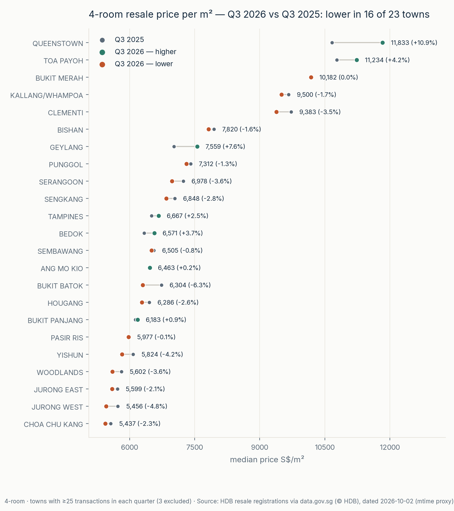
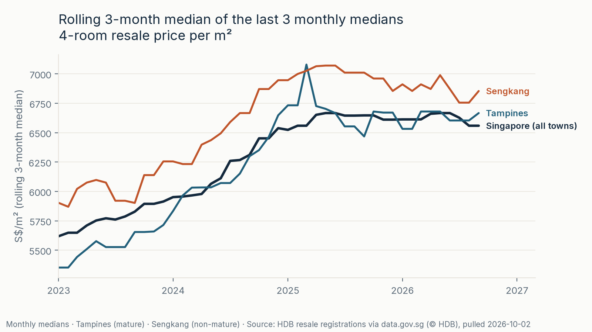
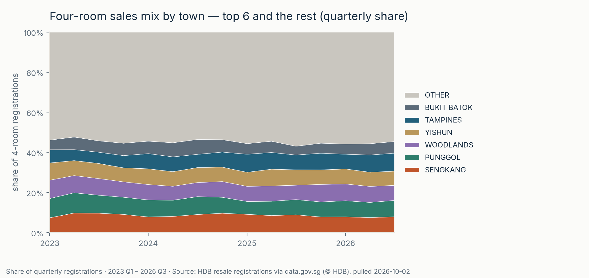
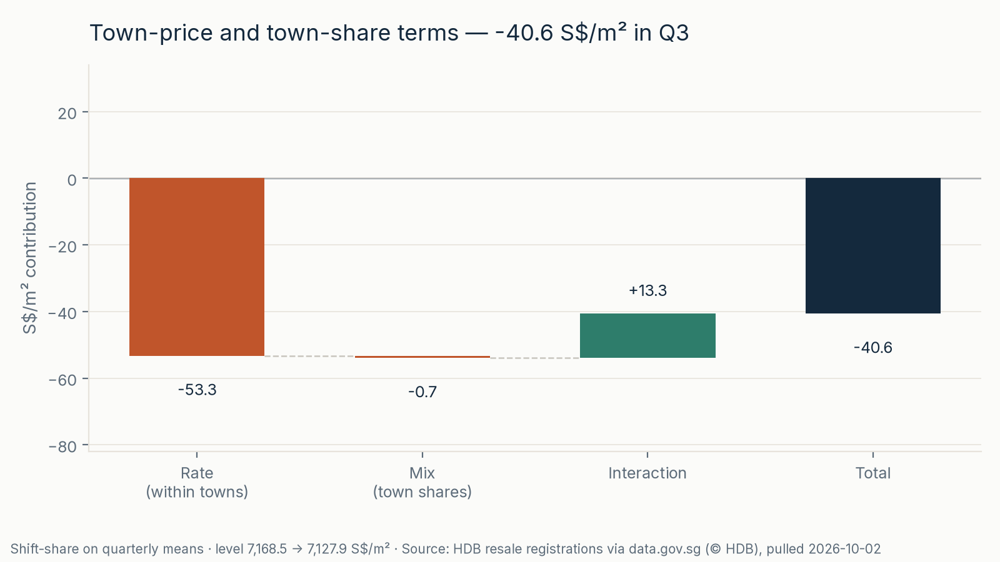
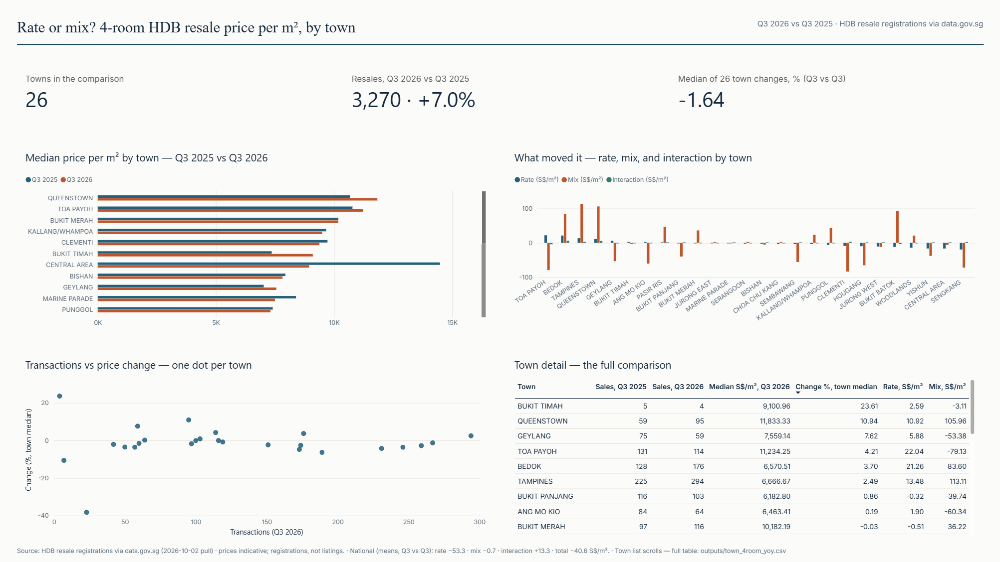

A six-repo series on Singapore's public data · 1 of 6
4-room resale price per m² dipped in Q3 2026 vs a year earlier: −1.3% on the headline median (S$6,647 → S$6,559/m²) and −0.6% on the mean basis used for the decomposition — both point the same way. Town-share mix nets to ≈0: rate −53.3 S$/m², mix −0.7, interaction +13.3. “Rate” still includes what sold within each town: Central Area (23 sales in each quarter) contributes −16.4 of that −53.3, coinciding with fewer Cantonment Road Type S1 sales (15 → 8). Restricting the split to towns with ≥25 sales in each quarter moves the rate to −38.5. A small dip; not a like-for-like flat-price estimate; one quarter.





Requires uv. Run in Bash (Linux/macOS or Git Bash on Windows):
git clone https://github.com/faizsaifulnizam/hdb-resale-mart && cd hdb-resale-mart
uv venv .venv --python 3.12 # or: python -m venv .venv
if [ -f .venv/Scripts/activate ]; then
source .venv/Scripts/activate # Windows Git Bash
else
source .venv/bin/activate # Linux / macOS
fi
uv pip install -r requirements.txt # or: pip install -r requirements.txt
python src/download.py # raw CSV → data/raw/ (gitignored)
python src/build_dataset.py # staging + 8 checks → data/processed/sales.parquet
python src/analysis.py # medians, YoY, decomposition, sensitivity → outputs/
python src/figures.py # re-renders reports/figures/Then check outputs/town_4room_yoy.csv: Queenstown reads 10,666.67 → 11,833.33, and the national medians match the headline. Data as of the 2026-10-02 pull — a later re-pull can move the newest months.
4-room flats only; price is normalized by floor area, but flat-size mix is not decomposed. The split uses means, not medians, and does not reconstruct the official HDB price index. Town-average “rate” still includes block, storey, lease and model composition; the Central Area sales pattern is descriptive, not causal proof. All 26 towns remain in the national split; only the chart suppresses the three below-threshold towns. Registrations can revise; this is not a forecast.